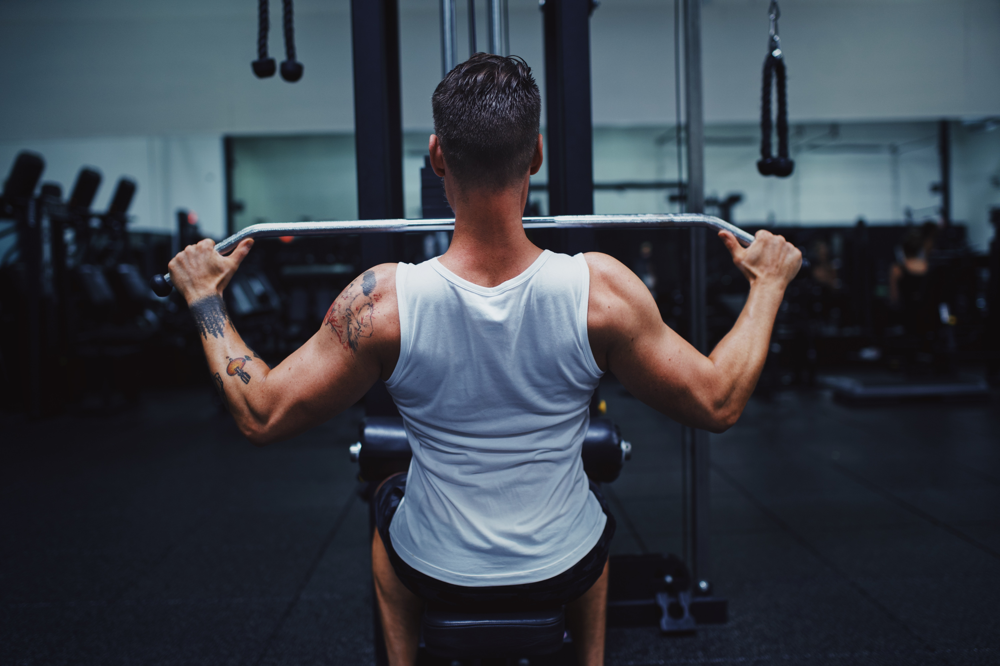
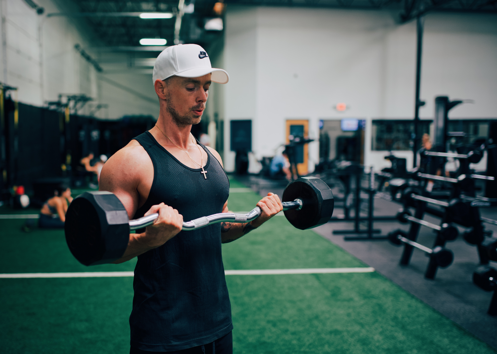

Workout Splts

Chest workout
-
The chest muscles could be considered a defining part of strength anatomy. They are involved in actions such as squeezing a set of loppers to cut a tree branch and pushing a door open. They are also the primary muscles referenced when debating upper body strength (“How much can you bench, bro?”).
For body builders and those interested in general muscular aesthetics, the chest muscles are the defining part of muscle mass. Powerlifters rely on them for the bench press to score the greatest lift.
But these muscles are also incredibly important from a functional standpoint because they support the movement of the arms.
A number of studies examining perceived attractiveness found that a low waist-to-chest ratio was rated as the most attractive physical feature on males (1Trusted Source). This is when a person has a narrower waist and broader chest.
But gender-specific beauty standards aside, everyone can benefit from strengthening the chest muscles — whether your goal is to have sculpted pecs or simply to be able to play Twister with your kids on the living room floor.

Back Workout
-
The back isn’t only one of the body’s biggest and strongest body parts, it’s also the most complicated in terms of being a series of interconnected muscle groups. For the purposes of this feature, we’re dividing the back into its four main regions:
Upper and outer lats
Lower lats
Middle back
Lower back
Each area requires specific stimulation via the exercises and angles of attack used, and we’ll show you the two best back exercises for each.
With this menu you can customize your own back workout by choosing one exercise from each category to create a total program. Or if one region is lagging, you can pick additional movements that hit that area only. Either way, fully understanding which back exercises hit which portions of your back will allow you to build shape (in particular the V-taper), thickness, and width.
Note: Many of the exercises we include here do not isolate, but rather emphasize, certain areas of the back musculature.

leg Workout
-
It’s often said that you shouldn’t skip a leg day. Leg workouts are important for several reasons, yet they are sometimes neglected in favor of upper-body workouts.
Instead, you should follow an exercise program that supports a balanced body, which includes having a strong, stable foundation.
Read on to take a look at some of the reasons you should work your legs daily, the benefits, and when it’s okay to take a break.

Biceps workout
-
If there's one constant in biceps training, it's that you have to do a basic curling motion—a movement in which your elbow flexes against resistance—to add strength and muscle size, but that's really just the beginning. If standard curls were all you needed to build bigger arms, you'd probably have huge guns by now, and this would be a very short article!
Alas, as anyone who's tried will tell you, building bigger biceps takes more than set after set of standard barbell curls. If you've stalled on your own quest for sleeve-splitting arms, follow the 10 laws of biceps training to get back on track!